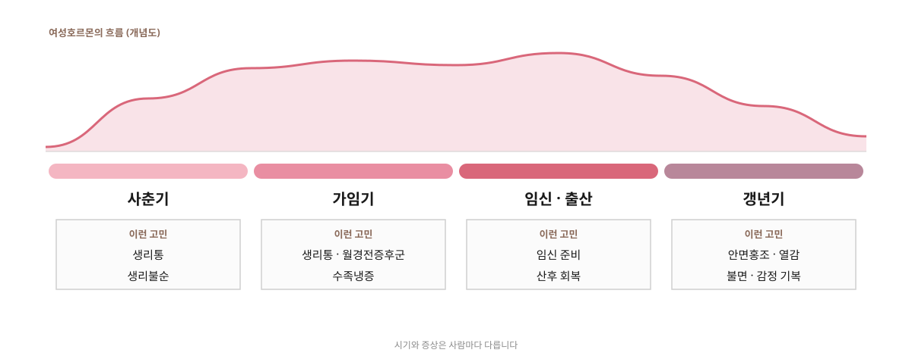

01
생리통
생리 전후로 아랫배와 허리가 아파 진통제 없이는 지내기 힘든 경우입니다.
이런 증상 · 아랫배·허리 통증, 두통, 메스꺼움
홈 > 소아·여성 > 여성 질환
생리통부터 산후 회복, 갱년기까지 여성의 몸을 살핍니다
WOMEN'S HEALTH
여성의 몸은 사춘기, 가임기, 임신과 출산, 갱년기를 거치며 호르몬이 크게 바뀝니다. 그때마다 생리통과 생리불순, 붓기와 냉증, 산후 회복, 갱년기 증상처럼 다른 고민이 찾아옵니다.
이런 불편함은 흔하다는 이유로 참고 지내기 쉽지만, 일상을 힘들게 할 정도라면 몸이 도움을 필요로 한다는 신호입니다.
갈창림한의원은 지금의 시기와 체질을 함께 살펴, 몸을 따뜻하게 하고 흐트러진 균형을 되찾도록 돕습니다.

CONDITIONS
01
생리 전후로 아랫배와 허리가 아파 진통제 없이는 지내기 힘든 경우입니다.
이런 증상 · 아랫배·허리 통증, 두통, 메스꺼움
02
주기가 들쭉날쭉하거나 너무 길고 짧은 경우, 양이 지나치게 많거나 적은 경우입니다.
이런 증상 · 불규칙한 주기, 건너뛰는 생리
03
생리 전 1~2주 동안 몸과 마음의 불편함이 반복되는 경우입니다.
이런 증상 · 붓기, 예민함, 가슴 통증, 두통
04
손발과 아랫배가 늘 차고 시린 경우입니다. 생리통과 함께 나타나기도 합니다.
이런 증상 · 차가운 손발, 시린 아랫배, 잦은 소화불량
05
임신을 계획하며 생리 주기와 냉증, 체력 같은 몸 상태를 미리 살피고 싶은 경우입니다.
이런 분께 · 몸을 미리 준비하고 싶은 예비 엄마
06
출산 후 관절이 시리고 아픈 산후풍, 붓기, 떨어진 체력처럼 회복이 더딘 경우입니다.
이런 증상 · 손목·무릎 시림, 붓기, 쉽게 지침
07
폐경을 전후로 호르몬이 줄며 몸과 마음에 여러 변화가 나타나는 경우입니다.
이런 증상 · 안면홍조·열감, 땀, 불면, 감정 기복
TREATMENT
아랫배와 몸을 따뜻하게 하고 순환을 도와, 시기마다 흔들린 몸의 균형을 되찾도록 돕습니다.
01
체질과 지금의 시기에 맞춰 처방합니다. 순환을 돕고 몸을 따뜻하게 해, 생리와 산후, 갱년기에 흔들린 균형을 되찾도록 돕습니다.
02
아랫배와 허리, 어깨처럼 긴장된 곳을 풀어 통증과 불편함을 줄이는 데 도움을 줍니다.
03
아랫배에 따뜻한 자극을 주어 차가워진 몸을 데우고, 냉증과 생리통 관리를 돕습니다.
04
건식반신욕기로 하반신을 따뜻하게 데우고, 장마사지기로 아랫배를 부드럽게 풀어 순환을 돕습니다.
FLOW
CAUTION
자궁근종이나 자궁내막증처럼 확인이 필요한 원인이 있을 수 있습니다. 검사 결과가 있다면 함께 보며 상담해 드립니다.
FAQ
네. 생리 중의 몸 상태에 맞춰 치료를 조절해 진행합니다. 불편한 점이 있다면 미리 말씀해 주세요.
임신 중이거나 임신 가능성이 있다면 진료 전에 꼭 알려 주세요. 임신 시기와 상태를 살펴 안전을 가장 먼저 생각해 판단합니다.
출산 방법과 회복 상태, 수유 여부에 따라 다릅니다. 진찰 후 지금 시작할 수 있는 치료를 안내해 드립니다.
네. 복용 중인 약과 치료 내용을 알려 주시면 확인한 뒤 함께 관리할 수 있는 방법을 안내해 드립니다.
※ 치료에 대한 반응과 회복 속도는 개인차가 있습니다.